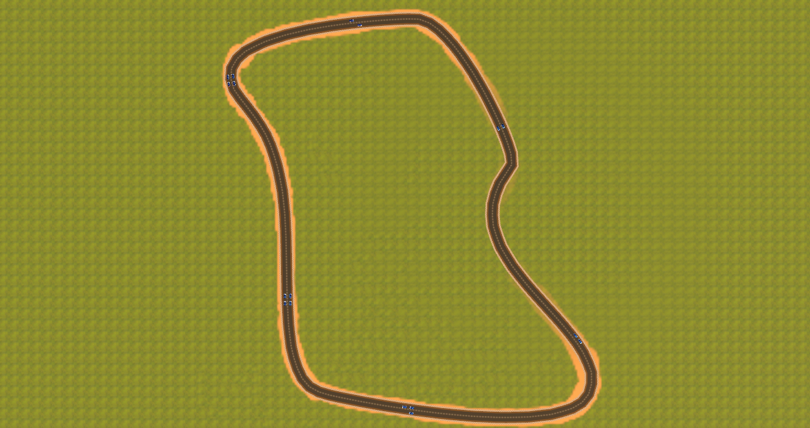
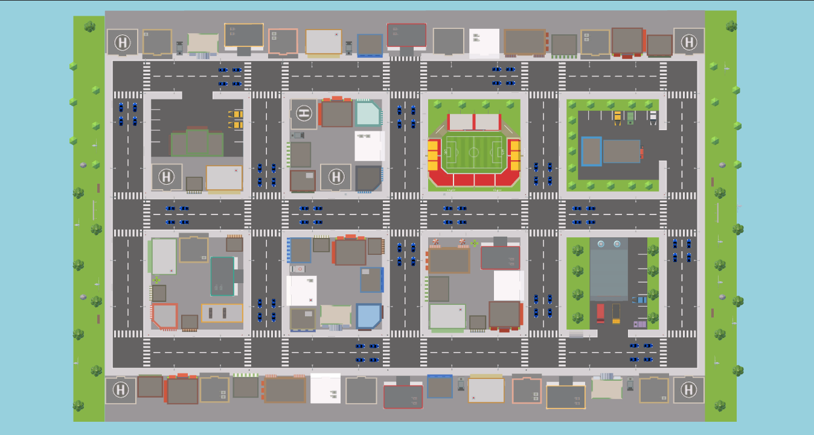

Multi-Agent Reinforcement Learning for Self-Driving Cars
A sophisticated simulation environment for testing and developing autonomous driving algorithms
Learn MoreProject Overview
This project represents an advanced exploration into autonomous vehicle navigation using reinforcement learning techniques. Through a custom-built Unity Game Engine simulation environment, I'm developing and testing sophisticated algorithms that enable autonomous vehicles to navigate complex road scenarios.
Autonomous Navigation
Advanced algorithms for real-time decision making and control
Reinforcement Learning
State-of-the-art RL techniques for continuous control problems
Simulation Environment
Modular Unity Game Engine-based testing environment
Project Goals
Technical Understanding
Develop comprehensive understanding of reinforcement learning techniques applied to continuous control problems
Simulation Development
Create a flexible and modular simulation environment using Unity Game Engine
Algorithm Demonstration
Demonstrate the capabilities of Multi-Agent Proximal Policy Optimization in autonomous vehicle navigation
Research Foundation
Establish a foundation for further research and development in autonomous driving
Technical Stack
Python
Primary programming language
Unity Game Engine
Simulation environment development
PyTorch/TensorFlow
Reinforcement learning implementation
Jupyter Notebook
Documentation and experimentation
Implementation Details
Environment Design
The autonomous driving simulation was built using Unity's ML-Agents toolkit to provide a controlled and flexible environment for reinforcement learning experiments. The virtual driving environment was carefully designed to balance realism with training efficiency, ensuring that the agent could learn effectively while avoiding unnecessary computational overhead.
Key Features:
-
Track Layouts: The environment includes multiple road configurations such as straight segments, sharp turns, intersections, and continuous loops. These variations challenge the agent's ability to generalize its learned policies across different driving conditions. In order to ensure smooth training, the agent is initially trained on the race track on the left to learn the basic behaviors required to drive. Then the pretrained agent is transfered to the urban environment featured on the left to learn how to interact with sharper turns and intersections.
- 
- 
-
Road Markings & Boundaries: Lanes are marked with distinct colors and borders to simulate real-world road constraints. Going off-road or crossing into restricted areas results in negative rewards, guiding the agent to stay within safe driving zones. When the agent enters the red areas, the agent is penalized. The green represents the checkpoints to guide the direction of the agent. The agent is awarded when reaching the correct checkpoint.
-
Sensor System: The agent is equipped with a front-facing raycast sensor array that simulates lidar-like perception. These rays detect distances to walls and obstacles, feeding spatial data into the neural network to inform decision-making. Note that the checkpoints are not detected by the sensors.
- Action Space: The agent outputs continuous values for steering and throttle, mimicking real vehicle controls. This enables smoother and more realistic driving behavior compared to discrete action spaces because it can make small fluid adjustments instead of being limited to a set of actions. In a complex driving environment, having a continous action space allows the agent to make detailed adjustments when dealing with avoiding aobstacles. However, this comes with the drawback of a longer training time because of the infinite number of possible actions that the agent needs to explore and learn causing noisier updates and slower convergance.
- Reward System: Rewards are structured to incentivize forward motion, staying in lane, and avoiding collisions. A small penalty is given for idling or veering off track, helping to shape desirable driving behaviors over time.
- Reset Conditions: Episodes reset automatically upon collision. Episodes also reset when passing the wrong checkpoint to prevent agents from moving in the wrong direction.


Agent Design
The agent's design is crucial for effective learning and decision-making in the autonomous driving environment. The agent's architecture and components are carefully designed to process environmental information and make appropriate driving decisions.
Key Components:
-
Controller & Physics System: The agent uses Unity's physics engine to create a Rigidbody to simulate realistic movement, acceleration, braking, and steering:
- Motor torque is applied to the rear wheels based on gas input and engine power
- Torque is calculated from the engine RPM and power curve
- Gear shifting: upshift when RPM exceeds a threshold and downshift when RPM drops below a threshold
- Brake torque is applied to all wheels
-
Observation Space: The agent receives a comprehensive set of observations including:
- Raycast sensor data for obstacle detection
- Global position
- Normalized rotational vector
- Velocity vector and magnitude
- Angular vector and magnitude
- Relative position to road boundaries
- Checkpoint proximity information
-
State Stacking & State Prediction:
The agent's decision-making process is enhanced through a sophisticated state stacking and prediction mechanism. This approach allows the agent to maintain temporal awareness and make more informed decisions by considering both historical and predicted future states.
State Stacking
The state stacking mechanism concatenates the current state with the previous two states to create a temporal context for decision-making. This approach is crucial for several reasons:
- The current state provides immediate information about the agent's position, velocity, and surrounding environment.
- The previous two states help the agent understand its motion dynamics, including acceleration patterns and trajectory trends.
- This temporal context enables the agent to make smoother decisions by considering how its state has evolved over time.
For example, when approaching a turn, the stacked states help the agent understand its current speed, how it has been accelerating or decelerating, and what adjustments might be needed to navigate the turn smoothly.
State Prediction
The state prediction system uses a pretrained neural network to forecast the next two states based on the current and stacked historical states. This prediction mechanism serves several important purposes:
- The pretrained network has learned the dynamics of the environment and can accurately predict how the agent's state will evolve.
- By predicting future states, the agent can anticipate potential issues before they occur, such as upcoming obstacles or the need to adjust speed for a turn.
- The predictions help the agent make more proactive decisions rather than purely reactive ones.
The prediction network takes as input the current state and the stacked historical states, and outputs predictions for the next two timesteps. These predictions include expected positions, velocities, and other relevant state variables. This forward-looking capability is particularly valuable in dynamic environments where immediate reactions might be too late to avoid problems.
Integration and Benefits
The combination of state stacking and prediction creates a powerful decision-making framework:
- Enhanced Temporal Awareness: The agent maintains a clear understanding of both its past trajectory and likely future states, enabling more informed decision-making.
- Proactive Planning: By predicting future states, the agent can plan its actions in advance rather than simply reacting to immediate circumstances.
- Improved Stability: The temporal context helps prevent erratic behavior by considering the agent's motion history when making decisions.
- Better Performance: This approach leads to smoother trajectories, more efficient navigation, and better handling of complex scenarios.
For instance, when navigating through a series of turns, the agent can use its stacked states to understand its current trajectory and use the predicted states to plan the necessary adjustments for upcoming turns. This results in smoother, more efficient navigation compared to making decisions based solely on the current state.
-
Neural Network Architecture:
- Input layer processes sensor and state data
- Multiple hidden layers with ReLU activation
- Output layer for continuous action values for gas, brake, and steering angle
- Dropout layers and normalization used to prevent overfitting
- Independent shared value network for advantage estimation
Proximal Policy Optimization
Proximal Policy Optimization (PPO) is a state-of-the-art policy gradient method in reinforcement learning (RL), designed to improve the stability and reliability of training by restricting the size of policy updates. PPO is particularly favored for its simplicity and effectiveness.
RL Problem Setup
In RL, we train a policy \( \pi_\theta(a|s) \) (parameterized by \( \theta \)) to maximize the expected return:
\[ J(\theta) = \mathbb{E}_{\pi_\theta} \left[ \sum_{t=0}^T \gamma^t r_t \right] \]
Where:
- s = state
- a = action
- r_t = reward at time t
- \(\gamma \in (0,1)\) = discount factor
- \(\pi_\theta(a|s)\) = probability of taking action \(a\) given state \(s\)
Policy Gradient (Baseline)
The vanilla policy gradient approach estimates the gradient of the objective:
\[ \nabla_\theta J(\theta) = \mathbb{E}_{\pi_\theta} \left[ \nabla_\theta \log \pi_\theta(a|s) \cdot A^{\pi}(s,a) \right] \]
Where:
- \(A^{\pi}(s,a)\) is the advantage function, estimating how good action \(a\) is compared to the average action at state \(s\).
However, vanilla policy gradients can be unstable due to large updates in policy space.
PPO: Clipped Surrogate Objective
Step 1: Compute Probability Ratio
The probability ratio is computed as:
\[ r_t(\theta) = \frac{\pi_\theta(a_t|s_t)}{\pi_{\theta_{\text{old}}}(a_t|s_t)} \]
This ratio compares how the new policy's probability differs from the old policy's.
Step 2: Define Clipped Objective
The clipped objective function is defined as:
\[ L^{CLIP}(\theta) = \mathbb{E}_t \left[ \min \left( r_t(\theta) \hat{A}_t, \text{clip}(r_t(\theta), 1 - \epsilon, 1 + \epsilon) \hat{A}_t \right) \right] \]
Where:
- \(\hat{A}_t\) is the estimated advantage at timestep \(t\)
- \(\epsilon\) is a small constant (e.g., 0.1 or 0.2)
This clipping discourages \(r_t\) from moving too far from 1, thus preventing destructive updates.
Why It Works
If \(r_t\) tries to grow too much (say to 1.5 or 0.5), clipping flattens the objective to prevent further increase in reward — ensuring more conservative updates.
Advantage Estimation
Often, we use Generalized Advantage Estimation (GAE) to reduce variance:
\[ \hat{A}_t = \delta_t + (\gamma \lambda) \delta_{t+1} + \cdots + (\gamma \lambda)^{T-t+1} \delta_{T-1} \]
Where the temporal difference error is:
\[ \delta_t = r_t + \gamma V(s_{t+1}) - V(s_t) \]
Here:
- V(s) = estimated value of state \(s\)
- \(\lambda\) = GAE parameter (controls bias-variance tradeoff)
Training Procedure Summary
- Collect rollouts (trajectories) with current policy
- Compute:
- Returns \(R_t\)
- Value estimates \(V(s_t)\)
- Advantages \(\hat{A}_t\)
- For several epochs:
- Optimize \(L^{PPO}\) using mini-batches of rollout data
- Repeat
Why PPO Works Well
- Trust-region-like behavior: PPO restricts updates like TRPO but avoids its complex computation.
- Sample efficiency: Reuses rollouts for multiple gradient steps.
- Stability: Clipped objective prevents catastrophic updates.
- Simplicity: Easy to implement with modern frameworks like PyTorch or TensorFlow.
Reward Function Design
The reward function is a critical component in defining the agent's performance. By quantifying the current state of the agent, the reward function guides the learning process and shapes the agent's behavior. The design of the reward function is crucial for effective training and achieving desired driving behaviors.
The reward function is designed to provide feedback based on the agent's actions and the environment's state. It assigns rewards and penalties based on the agent's performance, encouraging it to learn optimal driving strategies.
The reward function is carefully designed to encourage desired driving behaviors:
✅ Rewards
| Scenario | Reward Value | Purpose |
|---|---|---|
| Forward Motion | +0.05 × forward velocity |
Encourages continuous forward motion |
| Optimal Speed (10–20 m/s) |
+0.02 |
Incentivizes maintaining optimal speed |
| Checkpoint Reached | +2.5 + scaled bonus(based on timer ratio) |
Strong reward with time-awareness; promotes efficiency |
❌ Penalties
| Scenario | Penalty Value | Purpose |
|---|---|---|
| Excessive Speed (> 20 m/s) |
-0.02 × (velocity - 20) |
Penalizes excessive speeding for each m/s over 20 m/s |
| Checkpoint Timeout | -2.0 - distance penalty |
Encourages urgency + adds positional feedback |
| Vehicle Collision | -0.5 × cumulative reward |
Large penalty proportional to performance; promotes cautious driving |
| Wall Collision | -0.1 × cumulative reward |
Softens penalty if progress was made |
| Wrong Checkpoint | -1.0 - distance penalty |
Prevents agents from driving the wrong way |
Key notes:
- Penalizing based on the cumulative reward discourages reckless behavior then a flat value
- By adding an additional bonus reward based on how fast a car reaches a checkpoint encourages efficient routing and ensures that the agent continues to progress.
Multi-Agent Shared Critic
The multi-agent system employs a sophisticated shared critic architecture that enables efficient learning across multiple agents while maintaining decentralized execution. This approach combines the benefits of centralized training with decentralized execution, allowing agents to learn from each other's experiences while maintaining independent decision-making capabilities.
Architecture Overview
-
Centralized Value Function:
- Global state representation incorporating information from all agents
- Shared neural network for value estimation
- Considers inter-agent relationships and environmental dynamics
-
Decentralized Execution:
- Each agent makes decisions based on local observations
- Independent policy networks for individual agents
- Real-time decision making without communication overhead
-
Parameter Sharing:
- Shared network weights across agents
- Accelerated learning through experience transfer
- Reduced memory footprint and training time
Training Process
- Agents collect experiences simultaneously in the environment
- Shared critic evaluates the global state and provides value estimates
- Individual policies are updated using PPO with shared value estimates
- Parameter sharing enables knowledge transfer between agents
Advantages
- Improved sample efficiency through shared experience
- Better generalization across different driving scenarios
- Reduced training time compared to independent agent training
- Emergent cooperative behaviors through shared learning
Data Collection & Training
The training process employs sophisticated data collection and learning strategies to ensure efficient and effective learning:
Experience Collection
-
Parallel Environment Execution:
- Multiple environments run simultaneously
- Increased data collection throughput
- Diverse experience sampling
-
Prioritized Experience Replay:
- Focus on challenging scenarios and rare events
- Dynamic priority adjustment based on TD-error
- Balanced sampling of experiences
Training Strategies
-
Curriculum Learning:
- Start with simple scenarios (straight roads)
- Gradually introduce complexity (turns, intersections)
- Progressive difficulty scaling
-
Hyperparameter Optimization:
- Learning rate scheduling
- Batch size optimization
- Network architecture tuning